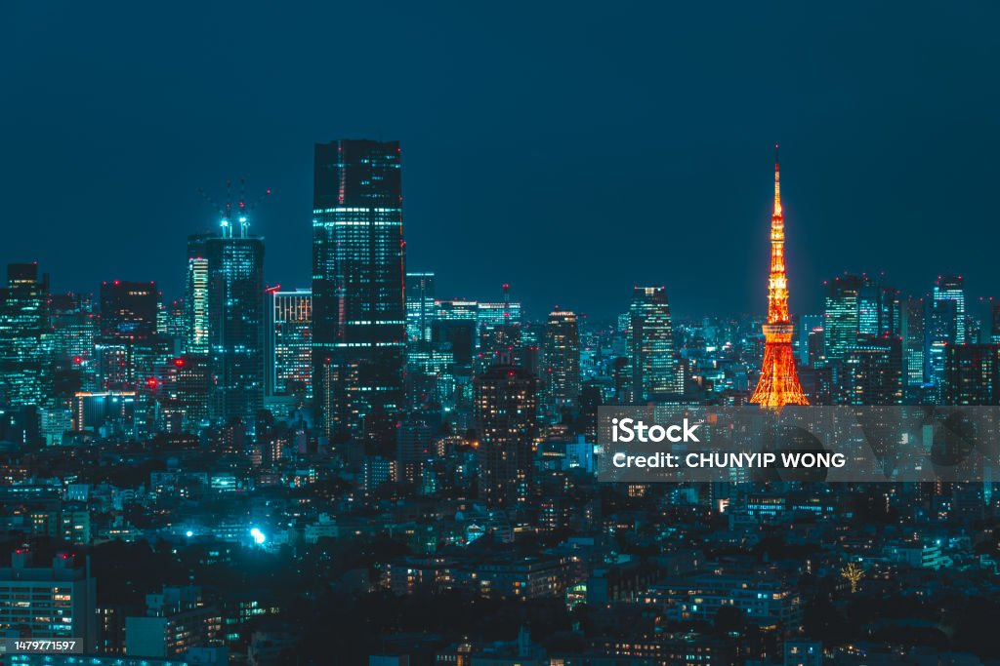

Tóquio é a capital do Japão e sede do governo nacional. É considerada uma das maiores metrópoles do planeta e também o centro político, econômico, educacional e cultural do
Japão. A metrópole representa uma das áreas de maior aglomeração urbana do mundo. A metrópole é constituída por 23 bairros, 26 municípios adicionais e as ilhas Izu e Ogasawara.

A capital japonesa possui um pouco mais de 9 milhões de habitantes. Já a região metropolitana de Tóquio, que compreende todas as grandes cidades no entorno, possui um aglomerado de
aproximadamente 37 milhões de habitantes, o maior aglomerado urbano do mundo. Segundo previsões feitas pela Organização das Nações Unidas, Tóquio seguirá no topo da lista, sendo a
cidade mais populosa, até 2028. As previsões apontam que a cidade de Nova Deli, na Índia, irá ultrapassar a capital japonesa.|1|